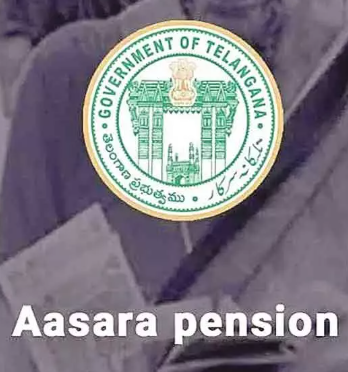

Asaara-penstion Scheme
State:TELANGANA

State:TELANGANA
As a part of its welfare measures and social safety net strategy, the Telangana government has introduced the “ Aasara ” pensions, with a view to ensuring secured life with dignity for all the poor.
Aasara’ pension scheme is meant to protect the most vulnerable sections of society, in particular, the old and infirm, people with HIV-AIDS, widows, incapacitated weavers and toddy tappers, who have lost their means of livelihood with growing age, in order to support their day to day minimum needs required to lead a life of dignity and social security.
The Telangana Government introduced “ Aasara ” – a new Pension scheme – enhancing the monthly pension from Rs. 200 to Rs. 1000 for the old aged, widows, weavers, toddy tappers and AIDS patients and Rs. 500 to Rs. 1500 for disabled persons. The government has spent Rs 4,700 crore on pensions benefitting 37, 65, 304 people including senior citizens, widows, physically handicapped, poor & old-aged artists and beedi workers. An increase of 478% over the previous such schemes.